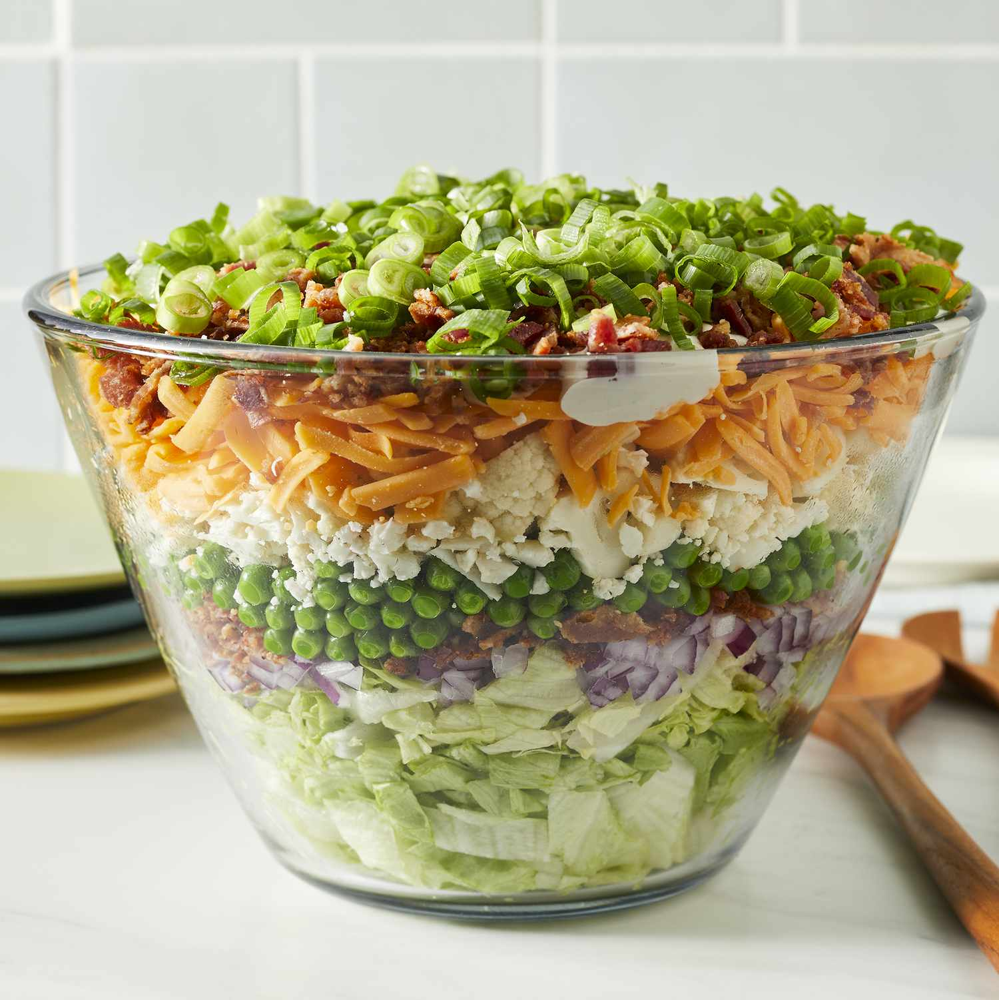

Seven Layer Salad

Photo of Seven Layer Salad
This 7-layer salad looks great in a large glass bowl. I usually make it with bacon, lettuce, red onion, pea, Cheddar cheese, and cauliflower but you can vary the type of onions, cheese, etc. There's never too much because everybody loves it!
Ingredients
Salad
- 1 pound bacon
- 1 large head iceberg lettuce - rinsed, dried, and chopped
- 1 red onion, chopped
- 1 (10 ounce) package frozen green peas, thawed
- 10 ounces shredded Cheddar cheese
- 1 cup chopped cauliflower
Dressing
- 1 ¼ cups mayonnaise
- ⅔ cup grated Parmesan cheese
- 2 tablespoons white sugar
Steps
- For the salad: Place bacon in a large skillet and cook over medium-high heat, turning occasionally, until evenly browned, about 10 minutes. Drain bacon slices on paper towels; crumble and set aside.
- Place chopped lettuce in a large glass dish or bowl; top with a layer of red onion, peas, shredded cheese, cauliflower, and bacon.
- For the dressing: Whisk mayonnaise, Parmesan cheese, and sugar together in a bowl until smooth. Drizzle over salad and refrigerate until chilled.